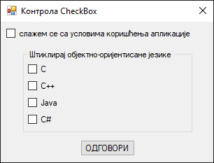
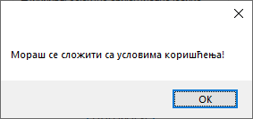

Оквир за потврду¶
Контрола оквир за потврду (енгл. CheckBox) дефинисана је у класи
CheckBox у именском простору System.Windows.Forms, односно склопу
System.Windows.Forms.dll. Класа CheckBox наслеђује класу ButtonBase, која
наслеђује класу Control, па због тога оквир за потврду има основна својства,
догађаје и методе као и остале контроле у Windows Forms App (.NET Framework)
пројектима.
Детаљан опис својстава, догађаја и метода класе CheckBox налази се у
званичној документацији.
Има их много и нема потребе наводити их све на овом месту.
Контрола оквир за потврду означава да ли је одређени услов „укључен” или „искључен”. Обично се користи да представи кориснику избор типа Да/Не или Тачно/Нетачно. На пример, „Да ли се слажеш са условима коришћења…”, где корисник треба да штиклира оквир за потврду како би наставио даље. Ако се ова контрола користи у групама у неком контејнеру, онда се може имплементирати вишеструки избор, где корисник изабира једну или више понуђених опција.
Контрола поља за потврду је слична контроли радио-дугме по томе што се користи за означавање избора који је направио корисник. Разликује се по томе што се код радио-дугмади може изабрати само по једно радио-дугме у групи, док се код поља за потврду може изабрати било који број поља за потврду у групи.
Ова контрола има два важна својства, Checked и CheckState. Својство
Checked враћа тачно или нетачно. Својство CheckState враћа или Checked
или Unchecked или, ако је својство ThreeState постављено на True, може да
врати и Indeterminate, где се оквир приказује са затамњеним изгледом који
указује да опција није доступна.
Нека је задатак да креираш једноставну GUI апликацију за демонстрацију рада са
контролом CheckBox. При врху форме треба да се налази оквир за потврду са
текстом: „Слажем се са условима коришћења апликације”. Испод треба да се
налази оквир за групу са текстом „Штиклирај објектно-оријентисане језике” и
четири оквира за потврду са текстом:
C
C++
Java
C#
Испод оквира за групу треба да се налази дугме са текстом „ОДГОВОРИ”. Кликом на дугме, ако корисник није штиклирао први оквир за потврду, треба да добије одговарајућу поруку о томе, а ако јесте, онда треба да се провери да ли су штиклирани тачни одговори.
Креирај нови Windows Forms App (.NET Framework) пројекат са формом димензија 320×240, постави контроле као на слици…

…и дај им нека смислена имена.
Дефиниши догађај Click за дугме на следећи начин:
private void btnOdgovor_Click(object sender, EventArgs e)
{
if (chkUslovi.Checked)
{
// ... провера тачних одговора
}
else
{
MessageBox.Show("Мораш се сложити са условима коришћења!");
}
}
На овај начин си имплементирао први захтев - да корисник не може да одговара на питања, док се прво не сложи са условима коришћења апликације, о чему добија одговарајућу поруку:

Како да провериш да ли је корисник све тачно штиклирао? То може да зависи од постављених правила. На пример, на твом матурском испиту, на тесту за проверу стручно-теоријских знања важило би правило:
за три тачна и ниједан нетачан одговор добио би максималних 3 бода,
за два тачна и ниједан нетачан одговор добио би 2 бода,
за један тачан и ниједан нетачан одговор добио би 1 бод и
за све остало добио би 0 бодова.
Ово правило могао би да имплементираш овако:
private void btnOdgovor_Click(object sender, EventArgs e)
{
if (chkUslovi.Checked)
{
int bodovi = 0;
if (!chkOdogovor1.Checked)
{
if (chkOdogovor2.Checked) bodovi++;
if (chkOdogovor3.Checked) bodovi++;
if (chkOdogovor4.Checked) bodovi++;
}
MessageBox.Show("Добио си " + bodovi + " од могућа 3 бода!");
}
else
{
MessageBox.Show("Мораш се сложити са условима коришћења!");
}
}
У некој конкретној апликацији за тестове знања, питање, одговори у текстовима
оквира за потврду и тачни одговори приказани као True/False стања оквира за
потврду учитавали би се из фајла или базе података и динамички смењивали једно
за другим.
Понекад ће бити потребно да апликација реагује на штиклирање оквира за потврду.
На пример, ако се задатак прошири захтевом да се прикаже одговарајућа порука у
тренутку када корисник штиклира да се слаже са условима коришћења, тај захтев
можеш имплементирати дефинисањем догађаја Click на оквир за потврду:
private void chkUslovi_Click(object sender, EventArgs e)
{
MessageBox.Show("Хвала што си се сложио са условима коришћења!");
}